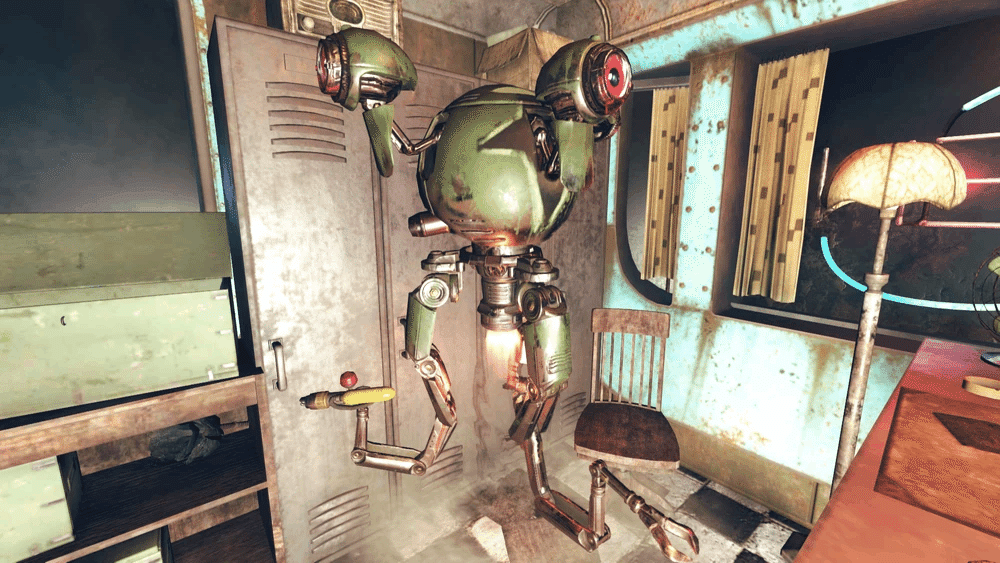
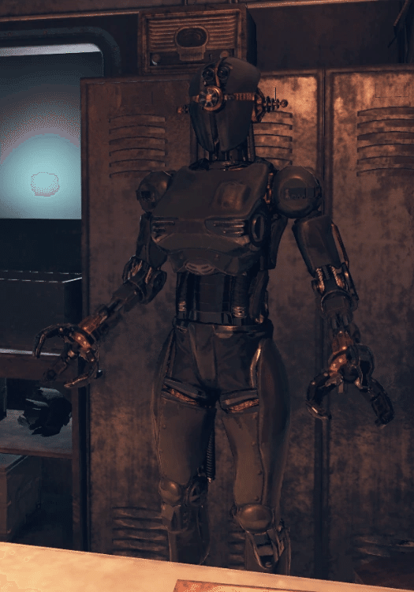
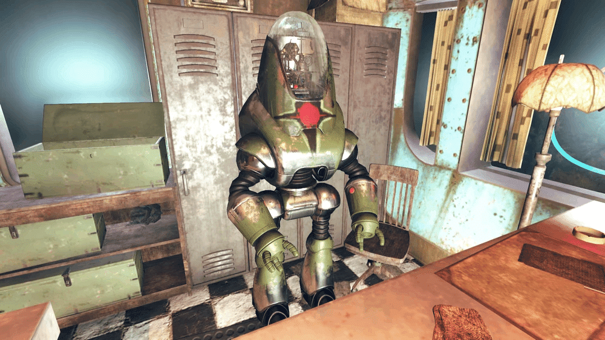

ポリー
DATE: 2025/11/30
ザ・ウェイワードに戻ると、プレイヤーがサマーズビルにあるダンカン&ダンカン・ロボティクスへ行き、彼女の新しいボディとなる傷のないロボットに発信機を取り付けている間、ポリーの頭部はムーンシャインの瓶の中に置かれます。

プレイヤーキャラクターとの関わり

クエスト
Strength in Numbers:
ポリーとソルはゴーリー鉱山から救出される必要があります。
ポリーは損傷していますが、彼女の頭部を使って鉱山内のスコーチを撃退することができます。プレイヤーの行動による影響
ポリーにアサルトロンのボディを与えた場合、彼女はプレイヤーキャラクターを褒め称え、ポリーの古い頭部（ヘッドギア）を渡します。
補足事項
ポリーは、発生する可能性のあるいくつかのランダムな会話に関与しています。
不満なボディを与えられた場合:
モートが彼女に「そんなに悪くない」と言うと、彼女は彼に感謝します。ソルとの会話:
ソルがフラットウッズのモンスターを見たかもしれないが怖くて逃げたと話すと、ポリーは彼を臆病者と呼びます。食べ物の会話:
ソルが何か見つけたが何かわからない、パンだと推測すると、ポリーはソルのそばに歩み寄り、それを見てぞっとし、ソルに燃やすべきだと告げます。モートとの会話:
モートが、ポリーがオポッサムを怖がって悲鳴を上げたようだと言うと、ポリーはそれは雄叫びだったと主張します。
感想
このクエスト中に使えるポリーを上手く使えた人いるんですかね!?
初心者にとってはアサルトロンの頭部は難しすぎる武器でした。
このポリー関連のクエストもマルチエンディングでプレイヤーが持ってきた機体によって結果が変わります。
このクエスト中に使えるポリーを上手く使えた人いるんですかね!?
初心者にとってはアサルトロンの頭部は難しすぎる武器でした。
このポリー関連のクエストもマルチエンディングでプレイヤーが持ってきた機体によって結果が変わります。

私の世界線のポリーはプロテクトロンになってその後無言になっちゃいました・・・。
This article uses material from the “Endor” article on the Star Wars wiki at Fandom and is licensed under the Creative Commons Attribution-Share Alike License.
This article uses material from the “Endor” article on the Star Wars wiki at Fandom and is licensed under the Creative Commons Attribution-Share Alike License.
TAGS: #Fallout76#Person